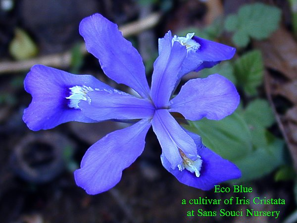
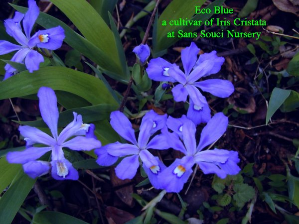

Eco Bluea cultivar of Iris cristata - Crested Iris - a North American Species |
|  |
ECO BLUE Hybridizer: Registered: Type: A cultivar of the Iris species Iris cristata Height: 6 in. (15 cm) Bloom Season: At Sans Souci we see these blooming among the earliest of our Irises. |
|  | |
|
Sans Souci Nursery, LLC
© 2005 Sans Souci Nursery . This image may only be used and/or reproduced by written permission of Sans Souci Nursery.
Specializing In Irises 3819 Beatty Road Monkton, Maryland 21111 Phone :(410) 557-0250 E-Mail:lbh0251@msn.com Webpage and catalogue production by BATW Web Services |
|